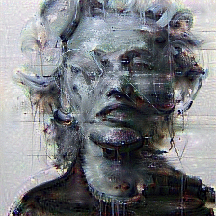
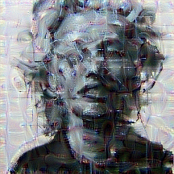
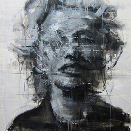
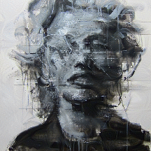
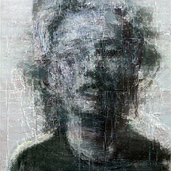
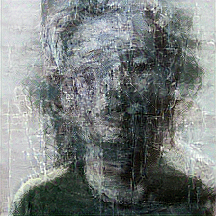
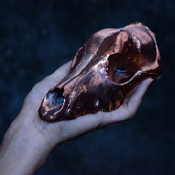

Deep Dream
The objective of this project/course work for CADL was to explore two styling techniques using deep learning. The first one is related with guided dreams/hallucinations, leveraging on the original idea of Inceptionism. The second one is based on style transfer. Both of these ideas were executed using the pre-trained network Inception (v5) of Google and using two paintings by Kim-Byngkwan and one picture done by Carol Pinzon. The subjects for this experiment are presented below.
deep dream
The idea behind Deep Dream is that when you have a neural network trained on images you can visualize what would make an image more appealing to certain parts of the network, adding the gradient of a specific part of a network with respect to the original input. This technique exalts features that maximizes an activation given an image. For this exploration I used the neuron that represented the probability of an image being a jellyfish and added the gradient to the input. The first gif to the right is the input image plus a small portion of the gradient over time as a feedback loop. The second gif is the same idea but this time the image is cropped at every margin and resized to match the original dimensions, giving the sensation of zooming in.

guided hallucination
Another way to exploit the information given by the gradients is to take two images and one feature vector of the neural network. One image is called the guide, while the other is the dream. Using a similarity measure between the two vectors like the L1 / L2 norm or the dot product between them, give us a sense of how the feature space represents both of the images. Using this similarity measure with another one that calculates the mean difference of pixel channels between images, is possible to create what is called a guided hallucination. The gradient of the two losses is calculated with respect to the dream image and then added to it iteratively. This loop reinforces characteristics in the dream image that makes it look more like the guide to the network and reveals details of the pattern that the feature vector is more inclined to define as similar.
In this case I define the dream as the first image of our subjects and the guide as the second one. The first gift shows the cumulative gradient if I use the guide as itself and as the dream with the dot product. The second one illustrates the same as before, but this time the dream is the second subject while using the dot product for the similarity loss. The 3 gif adds the gradient of just the similarity loss using the dot product. The 4 and 5 gif shows the gradient of the L1 and L2 norm respectively, showing what would make the dream different from the guide. Finally the 6 and 7 gif represents the negative gradient of the pixel loss with the L1 / L2 norm respectively.
NOTE: For all the images the negative gradient of the pixel similarity loss is added.
     
style transfer
Style transfer is a technique that leverages on the idea that the furthest a layer is, the more it represents the style and particular features of an image and the earlier they are the more it represents content. In this case, we define two images, one which is going to transfer its style to the other. In this case like the one before, two losses are defined. A content loss and a style loss. The content loss is defined as an earlier layer of the network while the style loss is defined as one of the latest layers. To the right I present the style transfer between the first painting of Kim into the photograph of Carol Pinzon with different weights for the losses.
